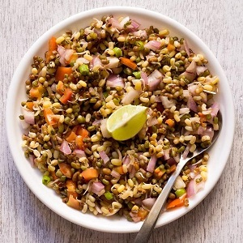

1. HERB OMELETTE WITH FRIED TOMATOES

Calories=200, Protein= 17g, Fat = 13g, Gluten free
METHOD:
- Heat oil in the pan, cook the round cut tomatoes.
- When they start to get soft, scoop them into the plate.
- Beat 4 eggs with salt and herbs like parsley and corrainder and pour it into the pan.
- When its nearly cooked place it over the tomatoes and your dish is ready.
2. LEMON CORIANDER SOUP
Rich in Vitamin C, healthy, Good for Weight Loss
METHOD:
- In a pan take 2 tsp oil, 2 garlic (finely chopped), ginger (1 inch) and then sauté them well.
- Add onion, coriander stem 2tsp, again sauté them.
- Now add vegetables like chopped carrots, cabbage, beans, etc, about 2 tsp each (you may add corn if you have about 2tsp), sauté them till 1 min.
- Add 2 cups of water, 1/2 tsp salt and 1 tsp pepper, mix them well, boil for 5 mins.
- Take 1 tsp corn flour in 1/4 cup of water and mix until no lumps are left, now add it to the pan.
- Boil for 2 mins and them add 3 tsp of lemon juice and 2 tsp of coriander and your soup is ready.
3. DADDOJANAM

Very Light for Summers, Good for Stomach and Boosts Digestion
METHOD:
- Take 1/2 cup of rice (rinsed) in a pressure cooker with 1.5 cup of water and cook it till 5 whistles.
- Mash the hot cooked rice a bit and mic with 1/2 cup of milk, let it rest for 10 mins.
- Add 1 cup of curd.
- In a smallbowl add 2 tsp of oil and heat it, now add mustard, cumin, urad dal and chana dal (all 1 tsp). Add a pinch of hing, pepper( 1/2 tsp)and few curry leaves, temper it and add to the mixture and your dish is ready.
4. BREAKFAST SANDWICH

Calories=275, Healthy, Good for Weight Loss
METHOD:
- Take 1 tsp of oil in a pan, add cumin and then onion, chopped 1/2 cup of carrot (u may add cabbage ).
- Break 1 egg into it, now add salt and pepper and mix it well, now add coriander leaves.
- Now take 2 brown breads (or the ones available), place few already cut tomato and cucumber pieces and then place your mixture between the two breads and your sandwich is ready.
5. BESAN CHEELA

Calories=230, easy to make
METHOD:
- Take 1/2 cup of besan, add chopped vegetables like onion, capsicum, green chillies, coriander.
- Now add salt, pepper, turmeric, red chilli powder, ajwain and warm water, mix it very well to form a paste (though having rough texture).
- Take a pan and put 1 tsp oil, now lay the paste onto the pan as an omelette and cook it from both the sides, once done you can have it with chapatti or directly with mint chutney.
6. OAT MEAL

Calories=68, Very Good for Weight Loss
METHOD:
- Take a pan and take oats in it as per requirement and add water, also add sugar according to taste (you can also add chia seeds).
- Let it boil a bit then put it into a bowl and add fresh fruits like banana, apple, etc, you may also add few dry fruits and have this whole bowl as your breakfast.
7. EGG PANEER VEGGIES

It has both protein and veggies and is very good for weight loss.
METHOD:
- Pan fry chopped paneer and place it in a plate.
- Now in a pan take few green vegetables and tomatoes, add some pepper and salt and let it cook a bit (remember don’t overcook it as we want all the proteins in our dish) .
- Now in a plate mix these veggies with the paneer and have it with 2 boil eggs daily.
8. UPMA

Rich in Protein, Vitamin B and Iron
METHOD:
- Take a pan and add 1 tsp of ghee and 1/4 cup of chane ki dal, now sauté it a bit
- Now add pinch of rai and 5-6 cashews, now fry it a bit and then add curry leaves and chopped onions and cook it for 2 mins, now transfer all of this in a bowl.
- Now in the pan, add suji (semolina)(very rich in iron ), roast it, just before it changes its color transfer it into a bowl.
- Now again add the earlier mixture into the pan, add green chillies, salt, pepper and water about 1.5 cup.
- When water starts to boil a bit then add the roasted suji slowly and mix it.
- Now transfer it into a bowl and put some coriander and your dish is ready.
9. CHIA SEEDS BANANA PUDDING
Chia seeds are full of fiber, protein, omegas 3, essential vitamins and minerals.
METHOD:
- In a blender, puree 2 ripe bananas, 1.5 cup of milk and ½ cup of peanut butter. Transfer the mixture to a medium bowl and stir in 3 tsp chia seeds. Cover with plastic wrap and chill in the refrigerator for 4 hours or overnight.
- Stir the mixture before serving. Can be stored in an airtight container refrigerated for up to 1 week.
10. POHA
METHOD:
- To a strainer, add flattened rice (poha). Rinse it under running water until it turns soft.
- To check if it’s done, press a flake between your thumbe and index finger, it should break easily.
- Add turmeric and 1/2 teaspoon salt to the poha and toss to combine. Set it aside while you make the tempering in the pan.
- Heat oil in a pan on medium heat. Once the oil is hot, add the mustard seeds and let them pop.
- Then add the peanuts and saute for a minute or two until they start turning brown.Then add the chopped onion, green chili and curry leaves. Cook for 2 minutes until the onions soften.
- Add the green peas (which had been soaked in warm water for 10 minutes prior) and mix. Cook for 2 minutes until raw smell of peas goes away.
- Then add in the rinsed poha and toss to combine. Taste test some poha and if it feels dry, sprinkle little water all over. Cook for 1-2 minutes. Also tastes test and add more salt as needed at this point.
- And then cover the pan with a lid and turn heat to low. Let it be like that for 2 minutes. Then turn off the heat.
11. SPROUTS
METHOD:
- First you have to Sprout the moong beans.
- Once the moong sprouts are ready, rinse them in water.
- Either steam or boil them till the moong sprouts are completely cooked. you can even keep it half cooked if you want a crunchy taste.
- Then drain the water from the cooked moong sprouts.
- Add 1 small sized finely chopped onion and 1 medium sized finely chopped tomato. Next add 1 finely chopped green chili and 1 boiled potato.
- Then add 1/4 teaspoon red chili powder (or cayenne pepper) and 1/2 or 1 teaspoon chaatmasala.
- Mix it and lastly garnish with coriander leaves and its ready.
12. FRUIT SALAD
METHOD:
- Chop fruits (except blueberries) and add to a large mixing bowl.
- In a small mixing bowl, whisk together they honey, lime zest and lime juice.
- Pour dressing over fruit just before serving and toss to evenly coat and its ready.
10. GRANOLA BARS
They pack in plenty of healthy fats from the almonds and peanut butter, and lots of fiber from the oats.
METHOD:
- Place 1.5 cup of rolled oats, 1 cup of almonds and mashed dates(1 cup of dates) in a large mixing bowl and set it aside.
- Warm 1/4 cup of maple syrup (or agave or honey) and 1/4 cup of peanut butter in a small saucepan over low heat. Stir and pour over oat mixture and then mix, breaking up the dates to disperse throughout.
- Once thoroughly mixed, transfer to an 8×8-inch baking dish or other small pan lined with plastic wrap or parchment paper so they lift out easily.
- Press down firmly until uniformly flattened. You use something flat, like a drinking glass, to press down and really pack the bars, which helps them hold together better.
- Cover with parchment or plastic wrap, and let firm up in fridge or freezer for 15-20 minutes.
- Remove bars from pan and chop into 10 even bars, and they are ready .
11. BANANA AND CHIA SEEDS TOASTS
Calories: 209.9, Protein: 8.5 g, Packed with vitamins and minerals (like six times more calcium than milk!).
METHOD:
- Toast the brown bread and spread some peanut butter on it.
- Place the banana slices over it.
- Top it with chia seeds and have it right away.
12. SPINACH QUICHE
Calories:613, Protein:22.9g
METHOD:
- Take 1/2 cup of fresh spinach in mug with 2 tablespoons of water. Cover with a paper towel and microwave on high for one minute. Remove from microwave and drain the water and liquid from spinach thoroughly.
- Crack 1 egg into the mug with the spinach and add ½ cup of milk, 1/3 cup of cheddar cheese, and salt and pepper. Mix until thoroughly combined.